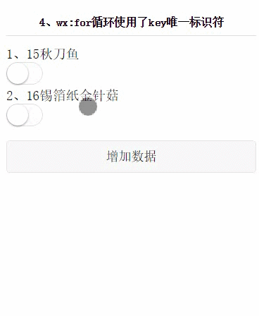

- 打包工具
- webpack：拆分代码， 按需加载。对于应用使用 webpack 打包。
- rollup：所有资源放在同一个地方，一次性加载，利用 tree-shake 特性来剔除项目中未使用的代码，减少冗余，但是 webpack2 已经逐渐支持 tree-shake。对于类库使用 rollup 打包。
- mac 终端工具
- itern2：iTerm2 有很多特性，用官方的话说，就是每一个终端使用者所期望的功能都能实现。例如：配色主题、搜索内容、分屏、命令补全、支持鼠标操作等等。
- oh my zsh：Oh My Zsh 来使用，它负责管理 Zsh 的配置，将使用难度大大降低，同时还加入了很多常用命令、帮助文档、插件和代码主题。
- Alfred：Alfred 是 Mac 系统上一款专注于效率提升的著名应用，它能帮你快速打开网页、快速进行自定义搜索、查看剪贴板历史、快速查询单词等等。Alfred 提供的功能虽然很多，但目的只有一个 —— 那就是减少我们工作中的一些重复动作，提升我们的工作效率。快捷键alt+space。这里可以下载很多 workflow：http://www.alfredworkflow.com/
- Moom：移动兼缩放软件窗口的工具，Moom 的优势就在于它整合在窗口按钮中，只要把鼠标移动到左上角的绿色按钮就能选择窗口大小了，非常的方便。
- spark：它不仅能对邮件智能归类提醒、还拥有完整的附件管理功能，并深度整合了日历
- windows 效率工具
- Wox：类似于 Mac 上面的 Alfred，安装插件参见http://www.wox.one/plugin。快捷键alt+space。
vue router 学习笔记
微信小程序wx:key的使用
如果列表中项目的位置会动态改变或者有新的项目添加到列表中，并且希望列表中的项目保持自己的特征和状态（如 如 input 中的输入内容，switch 的选中状态），需要使用 wx:key 来指定列表中项目的唯一的标识符。
当数据改变触发渲染层重新渲染的时候，会校正带有 key 的组件，框架会确保他们被重新排序，而不是重新创建，以确保使组件保持自身的状态，并且提高列表渲染时的效率。
在开发过程中，wx:key的作用对于项目作用是非常大的，如果从文字上无法理解的童鞋，可以到github clone demo到微信开发工具里，亲自体验下。
wx:key 的值以两种形式提供
字符串，代表在 for 循环的 array 中 item 的某个 property，该 property 的值需要是列表中唯一的字符串或数字，且不能动态改变。
保留关键字 *this 代表在 for 循环中的 item 本身，这种表示需要 item 本身是一个唯一的字符串或者数字，如：
1 | //test.js |
1 | <!-- test.wxml --> |
当数据改变触发渲染层重新渲染的时候，会校正带有 key 的组件，框架会确保他们被重新排序，而不是重新创建，以确保使组件保持自身的状态，并且提高列表渲染时的效率。
如不提供 wx:key，会报一个 warning， 如果明确知道该列表是静态，或者不必关注其顺序，可以选择忽略。

我们看到这个GIF动画图，这里有一个switch的开启状态，switch的状态是在标题为羔羊排骨一条的，在对这个数组增加数据时，这个switch的状态并不跟随着羔羊排骨一条，并不保持自己的状态。
那我们再看另一个例子，使用了wx:key唯一标识符。

这个GIF动画图，也是点击开启了switch的状态，唯一有不同的地方，就是在新增数据时，是保持着自己的状态的。
相信通过这两个小例子，对wx:key唯一标识符应该也有所了解啦，想要提升技术，就要多折腾，自己在小程序里，写个wx:for 和 wx:key 体会下。
还有一个需要注意的地方，我们先看看以下代码
1 | <view class="pad10" wx:for="{{twoList}}" wx:key="id"> |
wx:key=”id”，我们看到wx:key里的值并不需要花括号的，是的，这里是比较特别的地方，不需要花括号，同时也不需要参数名，需要是数据里的一个字段名。
hexo使用小计
owl nginx 配置
实现功能
- http 请求转 https
- https 实现
- proxy_pass 重定向
- gzip 压缩
- proxy_redirect 解决 https 转换为 http 请求的问题
配置文件路径：
/etc/nginx/conf.d
1 | server { |
nginx使用小计
小计
配置文件路径：
/etc/nginx/conf.d
proxy_set_header
如果在 proxy_set_header 中指定了 Host，如：
1 | proxy_set_header Host $host; |
这时候，如果掉线的话，则会报如下错误：
1 | Mixed Content: The page at 'https://owl.weiqiao.cn/index.html#/shp/shops' was loaded over HTTPS, but requested an insecure XMLHttpRequest endpoint 'http://owl.weiqiao.cn/login_p'. This request has been blocked; the content must be served over HTTPS. |
如果请求不了login_p，怎不能触发客户单的提示重新登录的提示：
1 | else if (err.response.status === 401) { |
解决办法就是添加proxy_redirect：
1 | proxy_set_header Host $host; |
spring boot 设置首页的方法
spring security放行
WebSecurityConfig.java中
1 |
|
如果站点未做映射，需要添加代码，针对/进行处理即可
1 | package com.owl.controller; |
nginx
nginx 不需要做任何处理，做好重定向即可。
vuex学习笔记
网址
小计
mapState
1 | computed: { |
当映射的计算属性的名称与 state 的子节点名称相同时，我们也可以给 mapState 传一个字符串数组。
1 | computed: mapState([ |
getters
你也可以通过让 getter 返回一个函数，来实现给 getter 传参。在你对 store 里的数组进行查询时非常有用。
1 | getters: { |
1 | store.getters.getTodoById(2) // -> { id: 2, text: '...', done: false } |
注意，getter 在通过方法访问时，每次都会去进行调用，而不会缓存结果。
mapGetters
mapGetters 辅助函数仅仅是将 store 中的 getter 映射到局部计算属性：
1 | import { mapGetters } from 'vuex' |
如果你想将一个 getter 属性另取一个名字，使用对象形式：
1 | mapGetters({ |
mapMutations
你可以在组件中使用 this.$store.commit('xxx') 提交 mutation，或者使用 mapMutations 辅助函数将组件中的 methods 映射为 store.commit 调用（需要在根节点注入 store）。
1 | import { mapMutations } from 'vuex' |
moment使用小计
小计
format
1 | moment().format('YYYY-MM-DD HH:mm:ss') |
对象构建
1 | // 如果传入的不是一个new Date()类型，而是moment对象，仍然能够创建成功 |
时区处理
服务端返回的时间没有进行时区转换，但是调用 moment format 方法时，能够根据当前时区进行时间切换。
与 element-ui 协作良好
el-date-picker 支持 moment 类型数据，也就是说 v-model 如果是 moment 类型，仍然能够工作很好。
diff，测量时间
1 | mounted() { |
moment 时间戳与时间格式相互转换
1 | // 获取时间戳 : |
Vue项目使用CDN优化首屏加载
1. 前言
作为一个网站应用，加载速度是非常重要的。加载速度，一个是程序的合理安排，如以组件按需加载，一个是js、css等资源的异步加载。
在Vue项目中，引入到工程中的所有js、css文件，编译时都会被打包进vendor.js，浏览器在加载该文件之后才能开始显示首屏。若是引入的库众多，那么vendor.js文件体积将会相当的大，影响首开的体验。
解决方法是，将引用的外部js、css文件剥离开来，不编译到vendor.js中，而是用资源的形式引用，这样浏览器可以使用多个线程异步将vendor.js、外部的js等加载下来，达到加速首开的目的。
外部的库文件，可以使用CDN资源，或者别的服务器资源等。
下面，以引入vue、vuex、vue-router为例，说明处理流程。
2. 资源引入
在index.html中，添加CDN资源，例如bootstrap上的资源：
1 | <body> |
3. 添加配置
在bulid/webpack.base.conf.js文件中，增加externals，将引用的外部模块导入，如下：
1 | module.exports = { |
注意一点：
格式为 ‘aaa’ : ‘bbb’, 其中，aaa表示要引入的资源的名字，bbb表示该模块提供给外部引用的名字，由对应的库自定。例如，vue为Vue，vue-router为VueRouter.
4. 去掉原有的引用
去掉import，如：
1 | // import Vue from 'vue' |
去掉Vue.use(XXX)，如：
1 | // Vue.use(Router) |
5. 移除package.json的dependencies
6. 测试
重新npm run build，会看到 vendor.js体积有所下降了。我自已的个人主页中，将所有的外部模块，使用CDN引入之后，vendor.js从1M，降为30k左右。
通过开发者模式的Network工具，可以看到vue.js、vuex.js、vendor.js等文件会分别由一个线程进行加载。且因为使用了CDN，减轻了带宽压力。